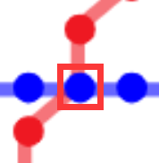

轨道交通智慧系统>运营规划辅助系统
 }}) 超级管理员
超级管理员
Sta101
站点位置

所属区域：4115
所属线路：3号线
所属功能区域：居住区
客流量对比
- 较昨日：+23.6%
- 较月平均：+12.1%
- 较年平均：+10.3%
- 早高峰客流： 231 人次
- 晚高峰客流： 315 人次
人群词云图
本月
当日小时客流
客流来源排行
| 排名 | 站点名 | 所在线路 | 客流量 |
|---|---|---|---|
| 1 | Sta93 | 3号线 | 121 |
| 2 | Sta16 | 3号线 | 111 |
| 3 | Sta14 | 2号线 | 98 |
| 4 | Sta42 | 3号线 | 71 |
| 5 | Sta53 | 6号线 | 67 |
客流去处排行
| 排名 | 站点名 | 所在线路 | 客流量 |
|---|---|---|---|
| 1 | Sta73 | 3号线 | 156 |
| 2 | Sta53 | 6号线 | 120 |
| 3 | Sta44 | 2号线 | 101 |
| 4 | Sta47 | 3号线 | 99 |
| 5 | Sta49 | 3号线 | 98 |
客流评分及预警措施
评分
描述
图表
各种设施建设数量
年龄结构
座位摆放